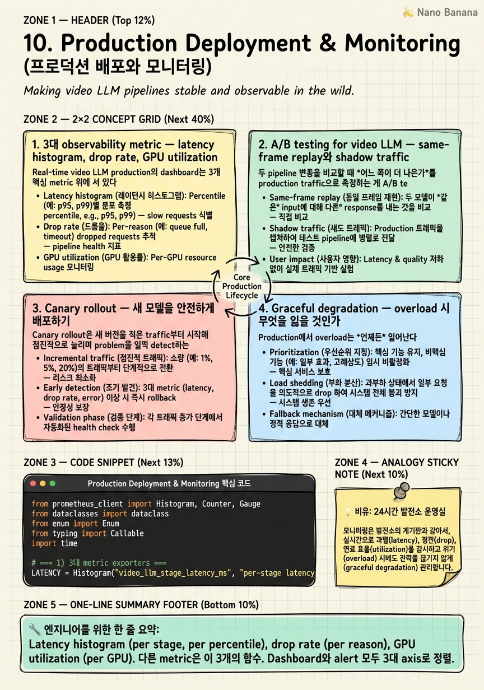

Production Deployment & Monitoring

🎯 학습 목표
- Real-time video LLM의 3대 observability metric을 정의하고 Prometheus/Datadog dashboard로 design할 수 있다
- Same-frame replay와 shadow traffic 두 A/B testing 패턴의 신뢰성 차이를 product 결정으로 매핑할 수 있다
- Canary rollout을 traffic split + early-warning metric으로 sketch할 수 있다
- Graceful degradation의 3축(drop frame / drop quality / drop response)을 product 요구로부터 정렬할 수 있다
- Cost-per-stream metric을 정의하고 GPU autoscaling을 SLA × cost로 정당화할 수 있다
Chapter 1-9까지가 real-time video LLM을 *어떻게 만들 것인가*였다면 이 챕터는 *어떻게 운영할 것인가*다. Production은 'algorithm이 좋다'로는 부족하다. 매일 24시간 reliable하게 돌고, 새 모델을 안전하게 배포하고, overload 시 graceful하게 degrade하고, 비용을 통제하는 운영 전체를 다뤄야 한다.
핵심 멘탈 모델 시프트: General/hour-scale video LLM은 benchmark 점수가 성공 기준이었다. Real-time production은 '1년간 99.9% uptime으로 SLA를 지키면서 cost-per-stream을 control한다'가 성공 기준이다. Benchmark accuracy 1% 개선이 production p99 latency 30% 증가를 정당화하지 못한다. 평가축이 완전히 달라진다.
이 챕터는 Gemini Live, GPT-4o Realtime API, Twelve Labs Marengo 같은 실제 production 시스템의 운영 패턴을 references로 사용한다. Observability, A/B testing, canary rollout, graceful degradation, autoscaling을 정리하고 incident playbook의 형태로 마무리한다.
핵심 내용
1. 3대 observability metric — latency histogram, drop rate, GPU utilization
Real-time video LLM production의 dashboard는 3개 핵심 metric 위에 서 있다. 다른 100개 metric은 이 3개에서 파생되거나 troubleshooting 도구에 가깝다.
(1) Latency histogram (per stage, per percentile). Chapter 8에서 정의한 6-stage breakdown × p50/p95/p99. Single number가 아니라 *분포 자체*를 dashboard에 표시. Prometheus에서는 histogram_quantile() 함수로 quantile 계산, Grafana로 stage별 heatmap. 시계열 위에서 분포의 *shape change*를 본다. 평균이 같아도 multimodal로 변하면 latent 문제. 'p99이 p95의 1.5배를 넘어가면 alert' 같은 정책으로 운영.
(2) Drop rate (per drop point, per reason). Chapter 9에서 *drop point를 architecture로 고정*했으므로 정확한 measurement가 가능. Drop reason은 (a) queue saturation, (b) stage timeout, (c) explicit policy (overload mode). 각 reason별 rate를 분리해서 표시해야 'queue가 차서 drop'인지 'LLM이 느려서 timeout'인지 즉시 식별 가능. Drop rate가 0%인 것이 항상 좋은 게 아니라 product 정책이 'soft drop으로 quality 보호'면 일정 drop을 허용. 정책과 metric이 align되어야 한다.
(3) GPU utilization (per GPU, per stage). GPU가 놀고 있으면 cost 낭비, 가득 차 있으면 queue saturation. *Saturated point*는 보통 80-85%. NVIDIA DCGM exporter로 SM utilization, memory utilization, NVLink throughput을 모두 수집. Stream concurrency를 측정하려면 NVML보다 Nsight system trace의 sample이 더 정확. Multi-tenant serving에서는 GPU utilization × concurrent streams로 *per-stream cost*를 환산.
그 외 메트릭은 이 3개의 함수: queue depth는 latency histogram의 leading indicator, error rate는 drop rate의 한 reason, throughput은 GPU utilization의 derivative. 3대를 명확히 잡으면 dashboard가 100개 metric을 다 보지 않아도 운영 가능.
시니어 결정 포인트: alert을 무엇으로 걸 것인가. 너무 민감하면 alert fatigue, 너무 둔하면 incident 놓침. 보통 'p99 latency > SLA × 1.5', 'drop rate > 1%', 'GPU utilization < 20% for 5 min'을 page-trigger로 설정. Lower severity는 ticket으로.
2. A/B testing for video LLM — same-frame replay와 shadow traffic
두 pipeline 변종을 비교할 때 *어느 쪽이 더 나은가*를 production traffic으로 측정하는 게 A/B testing이다. Video LLM은 일반 web A/B와 다른 신뢰성 문제가 있다.
문제: 같은 video stream에 대한 두 pipeline의 응답을 비교하려면 두 pipeline이 *같은 input*을 받아야 하는데, traffic split (user 50% A, 50% B)으로 하면 사용자가 보는 stream이 다르고 *상황*도 다르다. 'Pipeline A의 latency가 낮다'가 algorithm 차이인지 stream 차이인지 모른다.
Same-frame replay. Production에서 잘 동작한 stream을 녹화해두고 두 pipeline에 동일 input을 흘려 비교. Ground-truth control이 가능. 단점: production load와 traffic distribution을 모방 못 함. 실험실 결과가 production에서 재현 안 되는 경우 많음. 새 alg을 평가할 때 *initial gate*로 적합.
Shadow traffic. Production user의 stream을 *mirror*해서 두 pipeline에 동시에 보냄. Pipeline A의 응답만 user에게 전달, B는 evaluation만. Cost 증가하지만 (~2x) 동일 input + production distribution. Latency, drop rate, output quality를 fair comparison. 단점: B의 응답을 user에게 안 줘서 *interactive metric* (user follow-up question 비율 등) 측정 불가.
Traffic split. 일반 web A/B의 video version. User-level split 또는 stream-level split. 동일 input 보장은 안 되지만 *interactive metric* 측정 가능. Power 부족하기 쉬워서 sample size가 큼.
실전 결합 패턴: (1) same-frame replay로 algorithm correctness 1차 gate, (2) shadow traffic으로 production-load latency/quality 2차 gate, (3) traffic split (1% canary)으로 interactive metric 측정. 단계적 escalation.
주의: latency metric은 shadow traffic에서 가장 신뢰. Algorithm metric (accuracy proxy)은 *same-frame이 필요*. User satisfaction은 *traffic split이 유일한 방법*. 어느 metric을 비교하느냐에 따라 적합한 testing 패턴이 다르다.
3. Canary rollout — 새 모델을 안전하게 배포하기
Canary rollout은 새 버전을 적은 traffic부터 시작해 점진적으로 늘리며 problem을 일찍 detect하는 패턴이다. Real-time video LLM에 적용 시 특수성.
단계 sketch:
`
1% for 1 hour → 자동 게이트 (early metric)
5% for 1 hour → 자동 게이트
25% for 1 hour → 자동 게이트 (large enough for power)
50% for 4 hours → 자동 게이트 (off-peak ↔ peak 둘 다 보기)
100% → full rollout
`
각 단계에서 *early-warning metric*을 봐서 자동 abort. 보통 (a) p99 latency가 baseline의 1.3배 초과, (b) drop rate > 2%, (c) GPU utilization > 90% sustained, (d) error rate > baseline × 2. 자동 게이트가 잡지 못하는 *quality regression*은 manual review.
Stream-level affinity. 한 user의 stream은 *한 버전에 stick*해야 한다. Canary와 baseline을 frame-by-frame 섞으면 (a) 같은 KV cache를 못 쓰고, (b) user가 'sometimes 잘 답함, sometimes 못 답함'으로 incoherent하게 느낌. Routing layer에서 session_id hashing으로 affinity 보장.
Rollback 메커니즘. Canary 도중 문제를 발견하면 *즉시* baseline으로 traffic을 돌려야 한다. Traffic split을 routing layer에서 control하면 1초 안에 rollback 가능. Code/binary 배포는 더 느려서 emergency에서 부족. 시니어 결정: 'canary 도중 rollback button을 한 손에 둔다'.
Multi-region. Production 시스템은 region 단위로 rollout. 'US-East 1% canary 성공' → 'US-East 100% rollout' → 'EU-West 1% canary' → ... 식. Region별 timezone/usage pattern 차이로 catch되는 bug가 다르다. Gemini Live가 region별 staged rollout으로 운영되는 것으로 평가됨.
실전 함정: canary 1%가 너무 작아서 *quiet hours에 metric이 stable로 보임*. Off-peak 시간에 1%만 보면 noise에 묻힘. Peak hours 포함된 윈도우로 stage gating을 잡거나, *sample size 기반* gating(예: '최소 10K frame 후에 평가') 으로 보강.
4. Graceful degradation — overload 시 무엇을 잃을 것인가
Production에서 overload는 *언제든* 일어난다. Trending event로 traffic 2x, 새 region launch 시 underprovision, GPU vendor incident. 'Graceful하게 degrade한다'는 시스템이 죽지 않고 *서비스 quality를 의도적으로 낮춰* 살아남는다는 뜻. 3가지 dial.
(a) Drop frame. FPS를 30 → 15 → 10으로 자동 하향. Capture stage에서 drop. Latency budget이 살아남는다. User는 'frame이 약간 끊기는 느낌'으로 인지하지만 응답 자체는 받는다. Sports / interactive visualization product에서는 강한 degradation으로 느껴짐.
(b) Drop quality. Encoder를 SigLIP-Large에서 SigLIP-Small로 swap, token 수를 256에서 64로, LLM을 70B에서 7B로 fallback. 알고리즘 quality는 떨어지지만 throughput과 latency가 늘어남. User는 '응답이 약간 덜 정확해진 느낌'으로 인지. Meeting summarization / chat product에서 graceful.
(c) Drop response. Proactive response trigger를 off, user explicit query에만 응답. Decode 횟수를 줄여 prefill에 budget을 몰아준다. Video understanding 기반 추천 같은 product가 사라지지만 core video chat은 유지.
시니어 결정: product가 어떤 degradation을 견딜 수 있는가를 사전 협의. Sports live 해설은 'frame drop = product death'. Meeting summarization은 'frame drop OK, quality drop은 받아들임'. 둘이 다른 fallback 순서로 운영. 'overload 시 알아서 잘 한다'는 답은 시스템이 deterministic하지 않아서 incident response를 망친다.
자동화 vs 수동. Drop frame은 보통 자동 (capture stage backpressure). Drop quality는 *traffic 임계값 기반 자동*이거나 *수동 toggle*. Drop response는 거의 항상 수동 (product impact 크므로). Toggle을 LaunchDarkly / 자체 feature flag로 두면 incident 중 빠르게 active 가능.
Gemini Live의 production rollout 초기 보고: low-resource 디바이스에서 'frame을 자동으로 줄여 latency를 유지하는' behavior가 명시적. (a)+(b) hybrid로 운영된 것으로 평가.
5. Cost-aware autoscaling과 incident playbook
Real-time video LLM의 cost 단위는 *per-stream-hour*다. 한 stream을 1시간 처리하는 데 GPU $X. 이 metric을 정의 안 하면 cost optimization을 못 한다.
Cost-per-stream 계산:
`
cost_per_stream_hour = (gpu_hour_price × gpu_count) / concurrent_streams
`
H100 spot \(2/hr, 4 GPU node\)8/hr, 동시 20 stream → \(0.4/stream-hour. SLA p99 30ms에서 동시 30 stream으로 올리면\)0.27. 그러나 30 stream이면 p99이 50ms로 튀어 SLA 위반. *Cost-SLA frontier* 위에서 운영 점을 product와 협상.
Autoscaling 정책. 두 signal로 결정.
- GPU utilization 기반: 80% 이상 5분 sustained → scale up, 30% 이하 10분 sustained → scale down.
- Queue depth 기반: 모든 stage의 queue depth가 60% 이상 → scale up. Leading indicator로 utilization보다 빠르게 반응.
Real-time은 *scale-up latency*가 critical. K8s에서 새 GPU node를 띄우는 데 cold start 3-5분 걸린다. 그동안 overload가 지속되면 graceful degradation으로 보호. 'autoscaling이 도착하기 전에 degradation으로 살아남는다'가 시니어 운영 직관.
Warm pool 패턴. 미리 N개 node를 'warm standby'로 띄워두면 cold start 없이 즉시 traffic 분배. Cost는 + 10-20%지만 SLA 안정. Gemini Live 같은 high-SLA 서비스에서 표준.
Incident playbook. 'p99 latency가 SLA × 1.5 초과 alert이 page됐을 때 무엇을 할 것인가'를 미리 결정.
`
Step 1 (1분 내): dashboard에서 어느 stage가 늘었는지 확인. queue depth와 GPU util 함께 보기.
Step 2 (5분 내): bottleneck이 GPU면 graceful degradation toggle (drop frame to 15 FPS).
Step 3 (10분 내): bottleneck이 disappear되면 monitor 모드. 지속되면 emergency scale-up.
Step 4 (30분 내): root cause가 식별되면 rollback 또는 hotfix.
Step 5 (사후): post-mortem, dashboard에 새 metric 추가, runbook 업데이트.
`
이 playbook이 chapter 8의 6-stage breakdown, chapter 9의 producer-consumer architecture, chapter 10의 graceful degradation을 다 사용한다. Production engineering은 이전 챕터의 모든 의사결정이 결합되는 곳이다.
Production references. Gemini Live (Google I/O 2024): mobile 디바이스 ~500ms response, region별 staged rollout. GPT-4o Realtime API (OpenAI 2024): voice-to-voice ~232ms, streaming voice in WebSocket. Twelve Labs Marengo / Pegasus: streaming video search/QA, 1 FPS sampling으로 1시간 영상을 quasi-real-time embedding으로 indexing. 세 시스템 모두 (a) 3대 metric 위에 운영, (b) graceful degradation 명시적, (c) regional staged rollout 표준의 패턴을 공유한다.
시니어 평가: production engineering은 '한 chapter의 trick'이 아니라 *모든 chapter의 의사결정이 incident response 5분에 동원되는 능력*이다. 그게 real-time video LLM senior의 정의에 가깝다.
💡 비유로 이해하기
전력 발전소 control room을 떠올려보자. Operator가 보는 dashboard는 정확히 3개 metric에 집중한다. (1) 출력 전압의 *분포*: 평균만 보지 않는다. p99 spike가 일어나면 transmission grid가 깨진다. (2) 송전 *drop rate*: 일부 라인이 trip돼서 부하가 다른 곳으로 옮겨갔나. (3) 설비 *utilization*: 터빈이 idle하면 fuel 낭비, full capacity면 spike 시 fallback 없음.
새 turbine을 도입할 때 발전소는 즉시 100% 전환하지 않는다. 1%부터 시작해서 1%→5%→25%→100%로 단계적으로 부하를 옮기며 *진동, 발열, 효율*을 측정한다. 어느 단계에서든 metric이 기준 이탈하면 emergency switch로 baseline turbine으로 즉시 복귀. Canary rollout 그대로다.
Overload 상황 — heat wave로 전력 수요 폭증 — 에서 발전소는 *blackout을 막기 위해* (a) 일부 industrial customer의 공급을 줄이고(drop quality), (b) 일부 region의 전압을 95%로 낮추고(drop frame), (c) non-essential service 차단(drop response). 무엇을 잃을지 사전에 협의된 정책으로 운영. '알아서 잘 한다'는 답이 없다.
Cost-per-stream은 발전 단가($/kWh)다. Spot price × turbine 수 / 공급 가구. 이 단가를 모르고 발전소를 운영하지 않는다. Real-time video LLM의 production engineering은 24시간 발전소 운영을 GPU pipeline에 옮긴 것이다 — 모든 dashboard, 모든 playbook, 모든 economic decision이 그대로 매핑된다.
💻 코드 예시
Production observability + graceful degradation의 통합 sketch. 3대 metric을 Prometheus exporter로 노출, queue depth + latency tail 기반 자동 degradation, canary traffic split을 routing layer로 control.
from prometheus_client import Histogram, Counter, Gauge
from dataclasses import dataclass
from enum import Enum
from typing import Callable
import time
# === 1) 3대 metric exporters ===
LATENCY = Histogram("video_llm_stage_latency_ms", "per-stage latency",
["stage"], buckets=(5, 10, 20, 33, 50, 100, 200, 500))
DROPS = Counter("video_llm_drops_total", "frame drops by reason",
["reason"]) # saturation/timeout/policy
GPU_UTIL = Gauge("video_llm_gpu_utilization", "per-gpu SM utilization",
["gpu_id"])
# === 2) Degradation state machine ===
class Mode(Enum):
NORMAL = "normal"
REDUCE_FPS = "reduce_fps" # capture 30 -> 15
REDUCE_QUALITY = "reduce_quality" # encoder small + token 64
REDUCE_BOTH = "reduce_both"
@dataclass
class DegradationPolicy:
p99_target_ms: float = 50.0
queue_high_water: float = 0.7 # 70% capacity triggers escalation
queue_low_water: float = 0.3
cooldown_s: float = 30.0
last_change_ts: float = 0.0
mode: Mode = Mode.NORMAL
def step(self, p99_ms: float, max_queue_ratio: float) -> Mode:
now = time.time()
if now - self.last_change_ts < self.cooldown_s:
return self.mode
# Escalate on p99 breach OR queue high-water.
if p99_ms > self.p99_target_ms or max_queue_ratio > self.queue_high_water:
new = {Mode.NORMAL: Mode.REDUCE_FPS,
Mode.REDUCE_FPS: Mode.REDUCE_BOTH,
Mode.REDUCE_QUALITY: Mode.REDUCE_BOTH,
Mode.REDUCE_BOTH: Mode.REDUCE_BOTH}[self.mode]
# De-escalate on stability.
elif max_queue_ratio < self.queue_low_water and p99_ms < self.p99_target_ms * 0.8:
new = {Mode.NORMAL: Mode.NORMAL,
Mode.REDUCE_FPS: Mode.NORMAL,
Mode.REDUCE_QUALITY: Mode.NORMAL,
Mode.REDUCE_BOTH: Mode.REDUCE_FPS}[self.mode]
else:
new = self.mode
if new != self.mode:
self.mode = new; self.last_change_ts = now
return new
# === 3) Canary routing with session affinity ===
def route_stream(session_id: str, canary_fraction: float,
baseline: Callable, canary: Callable) -> Callable:
# Deterministic hash so a session sticks to one version.
h = (hash(session_id) & 0xFFFFFFFF) / 2**32
return canary if h < canary_fraction else baseline
# === 4) Per-frame instrumentation ===
class InstrumentedStage:
def __init__(self, name: str, fn: Callable):
self.name = name; self.fn = fn
self.timer = LATENCY.labels(stage=name)
def __call__(self, payload):
t0 = time.perf_counter()
out = self.fn(payload)
dt_ms = (time.perf_counter() - t0) * 1000.0
self.timer.observe(dt_ms)
return out
def record_drop(reason: str):
DROPS.labels(reason=reason).inc()네 가지 production-grade pattern이 코드에 담겨 있다. (1) LATENCY Histogram의 bucket이 frame budget 단위(5, 10, 20, 33, 50, ...) — Prometheus histogram quantile이 이 bucket 경계에 맞춰 정확. SLA p99 = 50ms를 정확히 측정하려면 bucket이 50ms 경계를 포함해야 함. (2) DegradationPolicy.step의 *cooldown_s*: state oscillation을 막는 핵심. p99이 한 spike만으로 quality drop 발동 후 30초 안에 normal 복귀 시 시스템이 불안정해짐. Hysteresis(high-water + low-water 분리)와 cooldown 둘 다 필요. (3) route_stream의 hash(session_id) 기반 routing — Chapter 9의 stream-level affinity 그대로. 같은 user는 항상 같은 버전. Canary rollout 시 'sometimes A sometimes B'로 incoherent UX 방지. (4) InstrumentedStage가 어떤 fn도 wrapping해 latency 측정 — Chapter 8의 6-stage profiling이 production observability로 자연스럽게 연결. *Wrapping pattern이라 instrumentation을 stage 구현에 강제하지 않음* — plug-and-play contract와 일치.
🏭 현업에서의 평가
✅ 시니어가 보는 것
- 3대 metric (latency histogram, drop rate, GPU utilization)을 dashboard 설계의 axis로 정렬
- same-frame replay / shadow traffic / traffic split을 비교 metric별로 적합한 testing 패턴으로 매칭
- Canary rollout에서 stream-level affinity와 자동 abort gate를 architecture로 강제
- Graceful degradation의 3축(frame/quality/response)을 product impact 순서로 사전 협의
- Cost-per-stream을 SLA × concurrent_streams의 frontier 위에서 협상
⚠️ 레드 플래그
- Latency를 single number(평균 또는 p50)로 dashboard에 표시
- A/B testing을 traffic split만 알고 same-frame/shadow를 모름
- Canary를 1% → 100% 한 번에 (점진적 단계와 자동 abort 없음)
- Graceful degradation 정책 없이 'overload 시 알아서 한다'고 답
- Cost-per-stream metric 정의 없이 GPU 추가만 답
🎤 예상 인터뷰 질문
- **Q1. A/B testing 패턴 선택.** 새 encoder를 production에 도입한다. (a) algorithm correctness, (b) production latency, (c) user satisfaction 3가지 metric을 각각 어떤 A/B 패턴(same-frame replay / shadow traffic / traffic split)으로 측정할 것인지 정당화하라.
- **Q2. Graceful degradation 정책.** Sports live 해설 product와 meeting summarization product가 같은 video LLM 시스템을 공유한다. 둘이 다른 degradation 정책을 가져야 한다. drop frame / drop quality / drop response의 우선 순위를 각 product마다 다르게 설계하고 정당화하라.
- **Q3. Cost vs SLA frontier.** Concurrent stream 20 → 30으로 늘리면 비용은 33% 줄지만 p99이 30ms → 50ms로 증가한다. Product가 'p99 < 40ms를 약속했다'면 어떤 협상으로 frontier 위 다른 점을 제안할 것인가? Warm pool, autoscaling threshold, region별 차등 운영 등 가용한 dial을 들어 답하라.
✨ 핵심 요약
Production은 3대 metric 위에 서 있다
Latency histogram (per stage, per percentile), drop rate (per reason), GPU utilization (per GPU). 다른 metric은 이 3개의 함수. Dashboard와 alert 모두 3대 axis로 정렬.
A/B testing은 비교 metric에 따라 패턴이 다르다
Algorithm correctness = same-frame replay, production latency = shadow traffic, user satisfaction = traffic split. 단일 도구로 다 측정 안 됨.
Canary rollout은 stream-level affinity 위에서 escalation
1% → 5% → 25% → 50% → 100% 자동 게이트, session_id hashing으로 user-stick. p99/drop rate/GPU 초과 시 자동 abort, rollback 1초 내.
Graceful degradation 3축: drop frame / drop quality / drop response
Product 별로 사전 협의된 순서로 자동 발동. Sports = frame이 절대 줄면 안 됨, meeting = quality 줄여도 OK. 알아서 잘 한다는 답은 없다.
Cost-per-stream-hour가 cost optimization의 단위
(gpu_hour × count) / concurrent_streams. SLA frontier 위에서 product와 운영 점 협상. 이 metric 없이 GPU 추가만 답하면 cost 통제 불가.
Autoscaling은 queue depth가 leading indicator
GPU utilization 80%는 lagging, queue depth 60%는 leading. Cold start 3-5분 동안 graceful degradation으로 보호. Warm pool로 high-SLA service 안정화.
Incident playbook이 이전 챕터 의사결정을 통합한다
5분 내 6-stage breakdown으로 bottleneck 식별 → degradation toggle → emergency scale-up → root cause. Chapter 8/9/10이 동시에 동원되는 능력이 시니어의 정의.
Production references — Gemini Live / GPT-4o Realtime / Twelve Labs
세 시스템 모두 (a) 3대 metric, (b) 명시적 graceful degradation, (c) regional staged rollout 공통 패턴. 자기 시스템 설계를 이 references와 join해 정당화하는 게 시니어 communication.